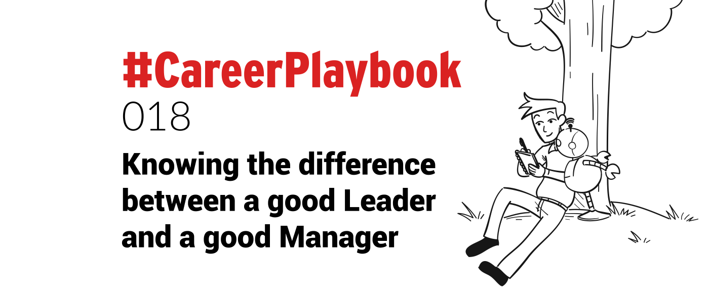

What is it that makes someone a good leader? Their charisma, or their internal drive perhaps?
Could it be that the great leaders are the ones that see a picture that is broader in its view than everyone else?
Whatever it is, it causes people to want to attach, follow, and collaborate with the great leaders of our generation.
Like a moth to a flame, individuals are attracted to the person and the cause. Often with a desire to participate or get involved in some way.
Jeff Bezos and Elon Musk, for example, have each created a following that is almost cult-like in its dedication.
It did not happen overnight.
Jeff Bezos started Amazon from his garage. Before Tesla, Elon Musk got his start founding a company called X.com, which later became PayPal.
Creating the biggest online retailer and a $1 billion dollar car company takes a massive amount of determination and application.
Both Jeff and Elon have an insatiable drive for delivering the right products to the right customers and have built empires on that concept.
How did they achieve it? By working hard and pushing their teams to achieve higher success.
Leaders are not known for subtlety when it comes to interacting with their teams. Their primary focus is providing excellent service and delivering what the customer wants, at any price.
Like a north star, they set a goal and drive teams toward it. Generating a combined effort that can achieve great things, or occasionally push people beyond their capabilities or comfort zone.
Great leaders get people on board and drive them towards their vision of success.
This laser-targeted, customer-driven mentality can cause some employee turnover, but it is all viewed as being for the greater good.
“You know who you are, you don’t know who you may be” – Jay Z
The bigger the vision of a leader, the more likely it is that (s)he will not be a good manager.
You cannot invent humanity-defining products like iPhone, Amazon, electric vehicles and offer a comfortable environment to employees.
The 2 just don’t mix.
Pushing the limits in order to achieve an "impossible" vision, means pushing the limits of what people believe they can do.
It means going beyond what is safe or known.
Leadership vs management
Good leaders can sometimes make bad managers. Good managers often do not make great leaders.
I have worked with both and have found that the best leaders blend a combination of both management and leadership skills.
So, what makes a good manager? They differ from leaders in that they are primarily focussed on the individual wants and needs of their people.
In a nutshell, we can say that:
Leaders = vision & customer oriented
Managers = team oriented
Leaders = have people follow them
Managers= have people work for them
Good managers can adapt quickly to changing situations and direct their employees to respond quickly to new events or requirements.
They protect their people and strive to advance them in their career goals.
There are many different management styles which can be interchangeable depending on the situation.
Autocratic, Democratic, Transactional, Servant, Laissez-faire, coaching, visionary, are all management styles that can be observed.
Some work better than others but all have their own strengths and weaknesses.
Identify those around you as leaders or managers then watch how they operate.
What is their style?
What do they do well?
What are their strengths and weaknesses?
What could they improve or do differently?
By observing and making honest assessments you will be able to learn what works best, and what not to do. Find your own style.
Managers and Imposter Syndrome
That said, all management or leadership styles can be subjective. The ‘best’ can be a fluid concept. What works for one may not work for another.
Some employees work well under tough demands and rise to the occasion, some do not and can buckle under pressure.
This is true also of managers and leaders. Did you know that many suffer from Imposter Syndrome?
You can read more about how I suffered from it every step of my own journey "climbing up the ladder":
#CareerPlaybook 002: Imposter syndrome is more widespread than you thinkI come across as confident, yet I had imposter syndrome every step of the way in my career. I’m thankful for it. Nicolas DevilleNicolas Deville
Nicolas DevilleNicolas Deville The feeling of not being truly deserving of their position or accolades, that advancement was caused by chance rather than being earned.
The feeling of not being truly deserving of their position or accolades, that advancement was caused by chance rather than being earned.
Even if this is the case, faking it until you make it is a valid strategy to adopt, and it is a tactic that is used by some.
Some leaders use these acting skills so well that no-one would ever know the truth.
Why?
Because perception is reality.
And good leaders/managers will learn quickly what they need to bridge the gap between the "faking it", and the "knowing it".
In any case, following someone that knows what they are doing, or at least seems to, can bring benefits.
It can provide great insights into what strategies and methods work well and yield results.
This may then be used in your own work methodology.
When adopting your own management or leadership style is important to assess what works best for you.
Just because you may admire someone that uses a specific style it may not best serve your purposes and own style.
Be honest with yourself and adopt the strategies that bring you the best results. Your style will always differ from someone else’s.
Being a business owner often means that you must be both a leader and a manager in varying quantities.
There are times that require leadership, and times that require management. Knowing the difference between the two is an art that takes practice.
The challenge is to align your employees or teams with your beliefs, goals, and vision to provide the best possible service.
Leading a team as well as managing a day-to-day operation is a delicate balancing act. Being able to juggle both successfully will create a competitive advantage.
If structured correctly, it will permeate your entire organisation and can lead to greater success.